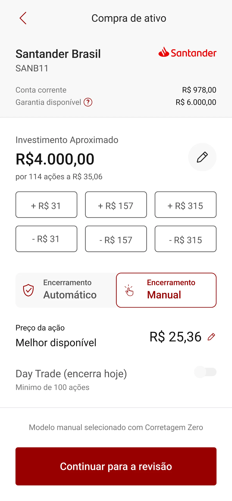

1 | Contexto
Um checkout feito em outra época
Quando o checkout nasceu, em 2018, boa parte dos clientes estava fazendo o primeiro investimento, e a tela foi desenhada para guiar quem não sabia por onde começar. Com os anos, os clientes amadureceram e o mercado criou padrões de usabilidade e de termos. O nosso checkout não acompanhou essa mudança, fazendo com que o usuário precisasse se adaptar à interface para fazer seus investimentos.
Objetivo
Atualizar o checkout para se adaptar aos padrões de mercado, tornando-o simples para quem já investia, sem perder a clareza para guiar quem está começando.